1939年，纳粹德国和苏联共同瓜分了波兰，此为二战导火索。波兰第二共和国政府流亡伦敦。
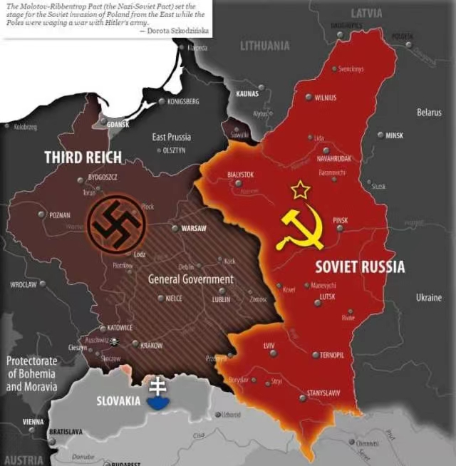
1940年仅在卡廷森林，苏联集中处决了2-3万波兰的军官和知识分子等人士。此外为了配合他们的“社会改造”，成千上万的的波兰人遭到迫害。包括了知识分子，神父，地主，前政府工作者或帮助者，军人，持不同政见的人士等。
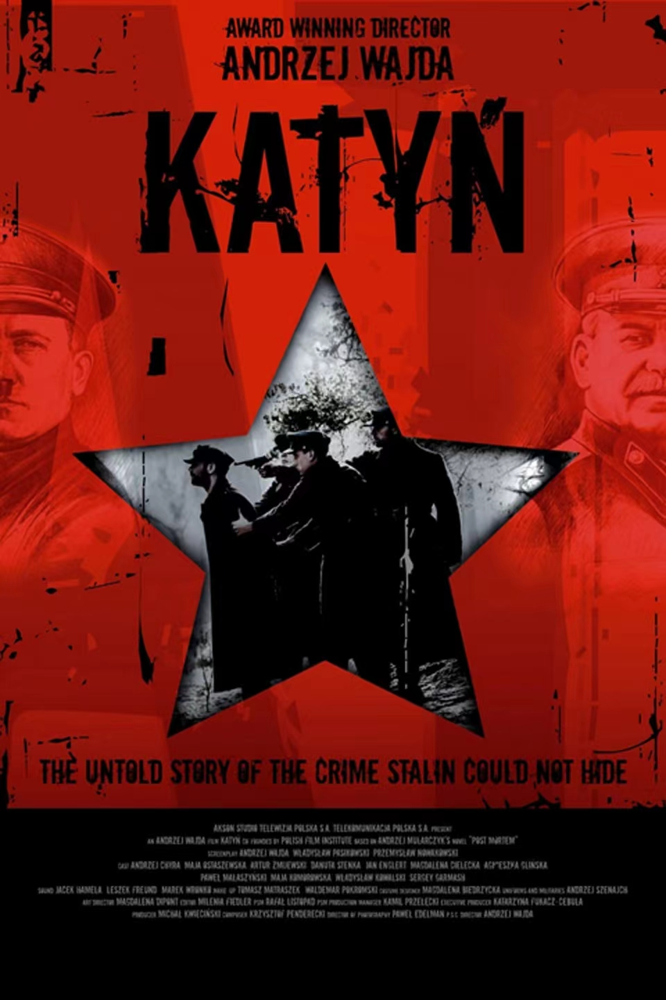
1944年8月1日，在苏联军队逼近华沙之际，流亡政府指挥的波兰抵抗组织（“波兰家乡军”）决定在华沙起义赶走德国人并且成立自己的政府，以此避免成为苏联的傀儡。其结果就是德军增派了援军，苏军在维斯瓦河对岸坐山观虎斗，最后起义军在孤立无援下投降。华沙几乎被夷为平地，95%的城市被毁，20-30万人死亡，其中大部分为平民，他们有很大一部分死于德军的刻意屠杀。希特勒下令完全摧毁这座城市，幸存下来的人则被强行迁移。
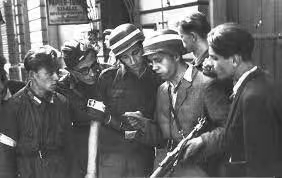
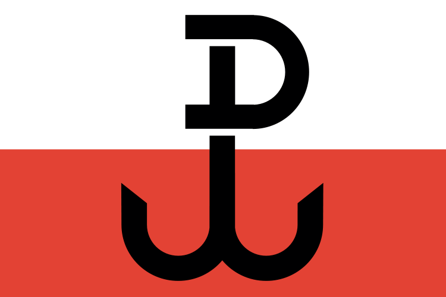
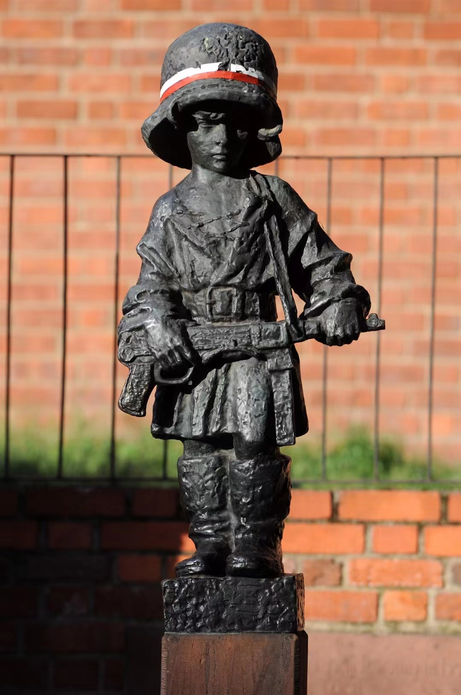
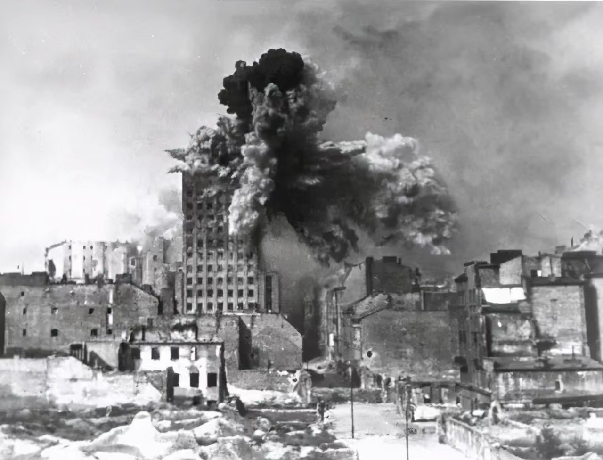
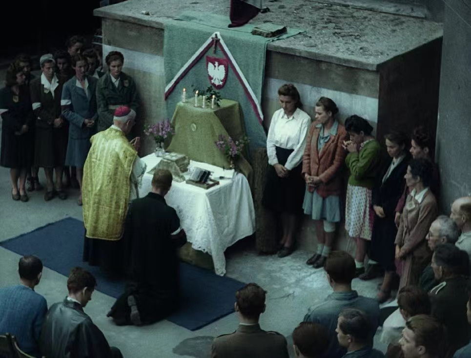
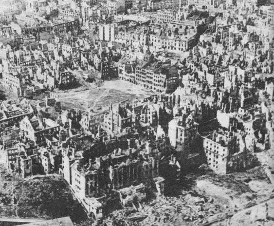
1945年战后在被苏联的占领下，成立了波兰人民共和国。铁幕逐渐落下，波兰成为了被抛弃的那一方。远在伦敦的第二共和国流亡政府也越越来越只变成一个象征。曾经参加过受流亡政府指挥的抵抗组织成员也在战后遭到迫害，在此情况下他们中有的人被迫继续进行游击武装抵抗。
这只不过是从纳粹的铁蹄控制下转换到了红色铁幕下，对波兰人来说这场战争远没有结束。在各种迫害和不公下，波兰人一直在抵抗。从1945年到1989年，波兰人组织起了各种罢工，示威，抗议，只不过抵不过国家机器的镇压。但到了80年代，红色统治开始松动了。
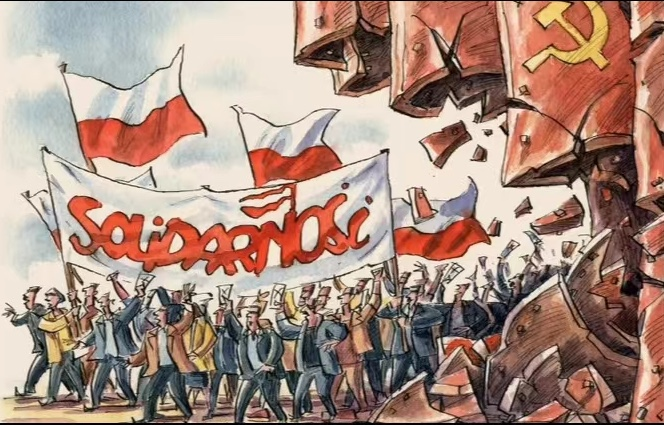
1980年年代大规模的罢工催生了团结工会，成为了一股强大的结社力量。在镇压无效之后，当局在各种压力下不得不承认团结工会的合法性。而波兰裔教宗若望保禄二世在1979年和1983年的两次对波兰的访问也至关重要，他给了波兰人很大的鼓舞。
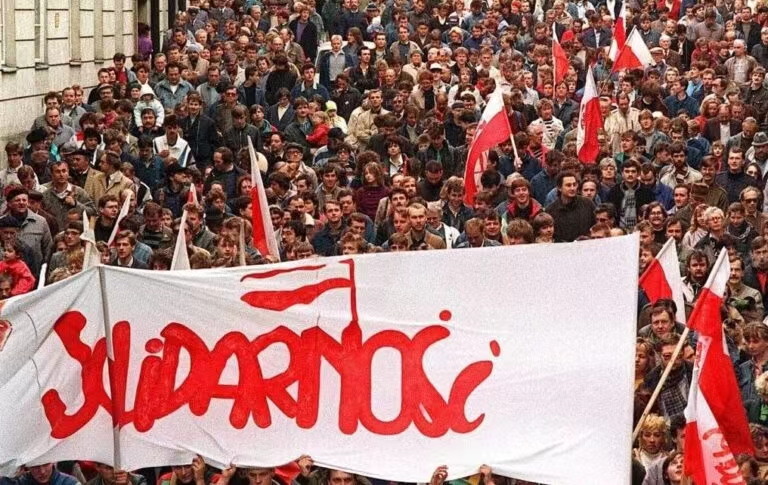
1989年6月4日，波兰人走出家门走向投票站。团结工会在自二战结束以来第一次部分自由的议会选举中获胜。标志着波兰共产统治的终结。
波兰人开始修改法律，波兰人民共和国变成波兰第三共和国，也拿走了很多以前在苏联扶持下被强加的东西。
1990年，瓦文萨在新的总统选举中获胜。
同一年，波兰第二共和国流亡政府最后一任总统返回华沙，把象征波兰的所有合法主权的象征移交给新政府。
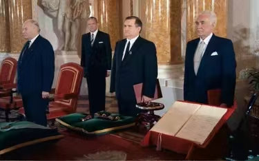
1992年波兰第三共和国政府承认第二共和国流亡政府颁发的所有勋章。
对波兰人来说，这是一段由成千上万的死者，受害者组成的永远的伤痛，这场战争从1939年持续到了1989年。
波兰也成了东欧在80年代末和90年代的倒下的第一块多米诺骨牌。
现在每年的8月1日，波兰人都会纪念1944年的那场在华沙的起义。
在曾经华沙的废墟上，仍然站起了新的，自由的波兰。
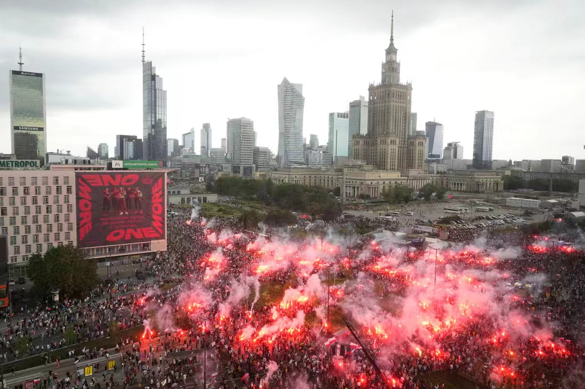
个人对苏俄的一些观点和看法
苏俄1939年后还入侵吞并了波罗的海三国，尝试入侵芬兰，但失败告终。值得一提的是，俄国（包括苏俄）在历史上侵略过他们的所有邻国（包括中国）。俄国在历史上也多次侵略过波兰，哪怕现在俄国依旧在入侵其他国家。邻国对俄国提防和反感不是没有道理。俄国宣称所谓的“反北约扩张”，但俄国甚至曾经也申请过加入北约，但被拒绝了。